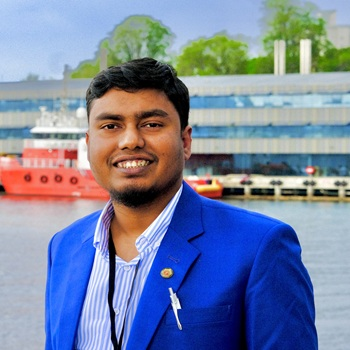
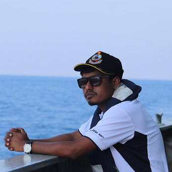
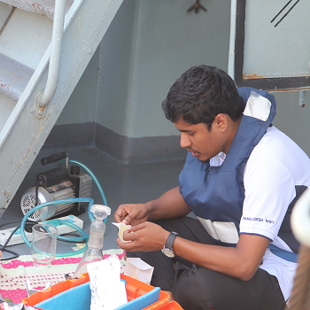

About
Dr. Md Rony Golder (PhD submitted, under examination) is a Research Fellow at the UWA School of Agriculture and Environment, University of Western Australia, Perth. His research expertise encompasses ocean color remote sensing, biological oceanography, Geographic Information Systems (GIS), environmental science, and coastal zone management.
Latest Achievement - ACEAS Impact Project Grant
Project: "Open Access digital resource dedicated to Earth Observation (remote sensing) and in-situ data"
Role: Content Lead & Principal Investigator | Funding: A$56,112
March-June 2026 | Australian Centre for Excellence in Antarctic Science (ACEAS)
Current Positions
Research Fellow
The University of Western Australia • Full-time • Jun 2026 - Present
- Water quality assessment of Darwin Harbour
- TUFLOW model validation and data analysis
PhD Candidate
Curtin University • Thesis Under Examination
- Long-term phytoplankton changes in Southern Ocean
- Submitted: March 18, 2026
Research Focus
Core Expertise
- Ocean color remote sensing & satellite oceanography
- Biological oceanography & marine ecosystems
- Numerical model validation (TUFLOW FV, AED)
- Water quality & biogeochemical processes
Technical Skills
- GIS & geospatial analysis (ArcGIS, QGIS)
- Programming (Python, R, MATLAB)
- Data pipelines & quality control
- Time-series analysis & machine learning
Professional Experience Highlights
Previously served as Consultant at BMT (Jan-May 2026), evaluating numerical model performance; Research Officer at UWA (Dec 2025-Jun 2026), providing AED model quality assurance; Research Assistant at WAMSI/SEAF (2024-2026), developing data pipelines for marine environmental monitoring; Visiting Fellow at Université de Brest (May-Jun 2025), applying deep learning to phytoplankton reconstruction; and Research Intern at CSIRO (Aug-Nov 2024), integrating biogeochemical data into Bluelink ReANalysis models.
Academic Journey
Spatial Science
Curtin University, Australia
Long-term phytoplankton changes in the Southern Ocean
Under Examination
Coastal & Marine Science
Khulna University, Bangladesh
CGPA: 3.83 (Distinction)
1st Class 1st
Fisheries (Honours)
Khulna University, Bangladesh
CGPA: 3.80 (Distinction)
1st Class 2nd
Research Impact & Recognition
Publications & Impact
- 27 research outputs including 18 peer-reviewed articles and 6 review articles
- H-index: 7 with 95 citations (Scopus)
- Recent work on sustainable shrimp aquaculture in Bangladesh published in Aquaculture (Q1 journal)
- Research on long-term chlorophyll-a variability in Southern Ocean published in Elementa
- Manuscript on Antarctic sea-ice impact on phytoplankton under review at Geophysical Research Letters
Professional Service
- Peer reviewer: Ocean Science Journal
- Member: Australian Marine Sciences Association
- Member: Geological Society of America
- Member: ACEAS
Notable Awards & Scholarships
A$250,000+ in research funding including ACEAS Impact Project Grant (A$56,112), Curtin International Postgraduate Research Scholarship (A$37,500/year × 3.5 years), International Doctoral Mobility Scholarship (€2,750 + A$3,200), AGU Student Travel Grant (US$1,000), DAAD Scholarship (Germany), and National Science & Technology Fellowship (Bangladesh).





Research Fellow | Ocean Color Remote Sensing Specialist | Biological Oceanographer
- Website: Md Rony Golder
- Phone: Available upon request
- City: Perth, Australia
- Current Position: Research Fellow, UWA
- Highest Degree: PhD (submitted, under examination)
- H-index: 7 (Scopus)
- Publications: 27 research outputs
- Email: UWA, BMT, Curtin, Personal
- Age: --
- Freelance: Available
- PhD Supervisor: Dr. David Antoine
- PhD Co-Supervisor: Dr. Peter Fearns
- PhD Co-Supervisor: Dr. Alex Sen Gupta
- PhD Co-Supervisor: Dr. Pete Strutton